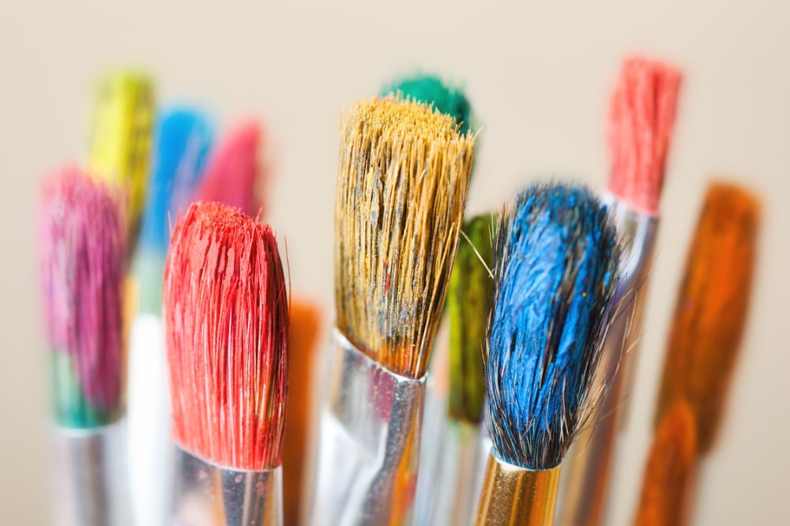
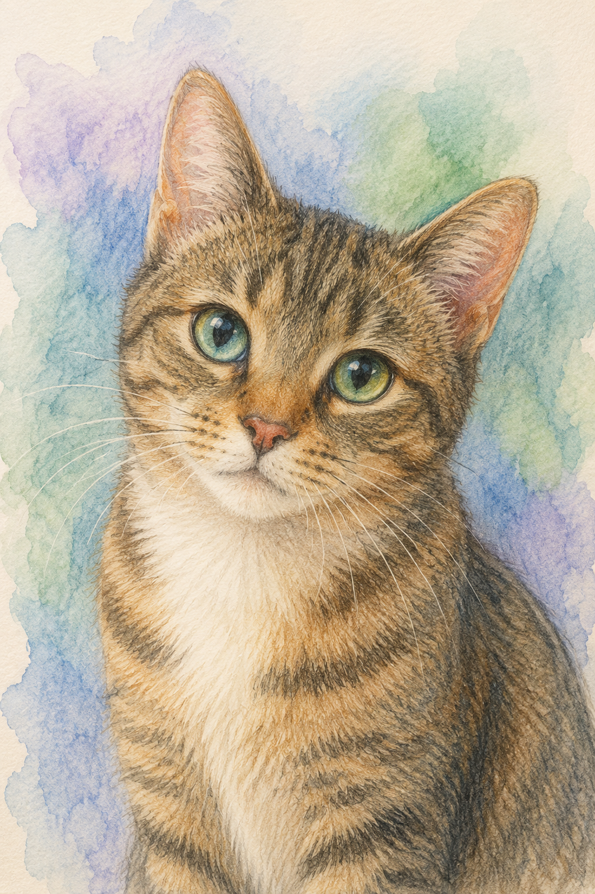
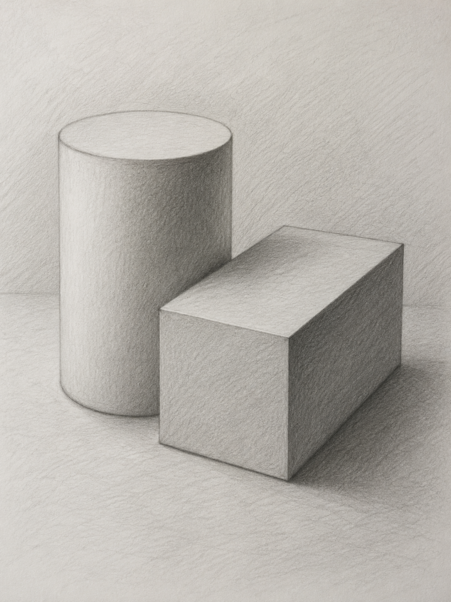
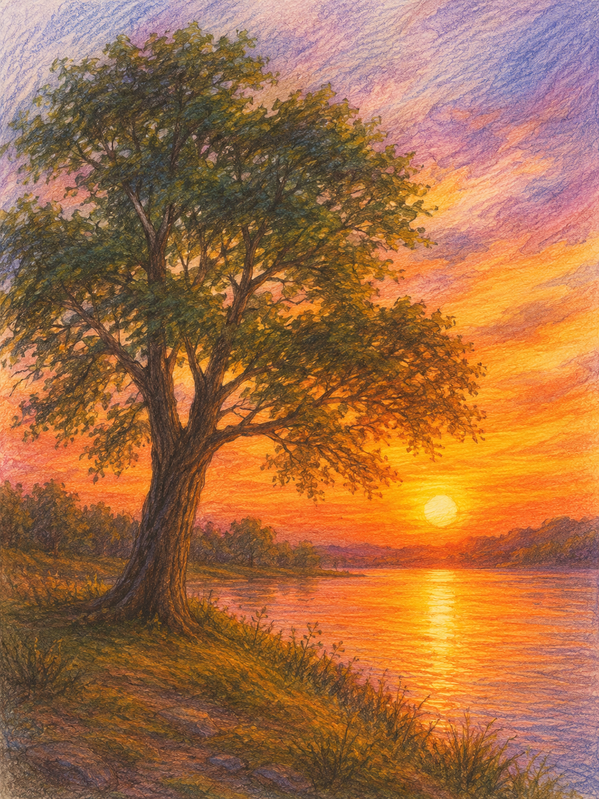
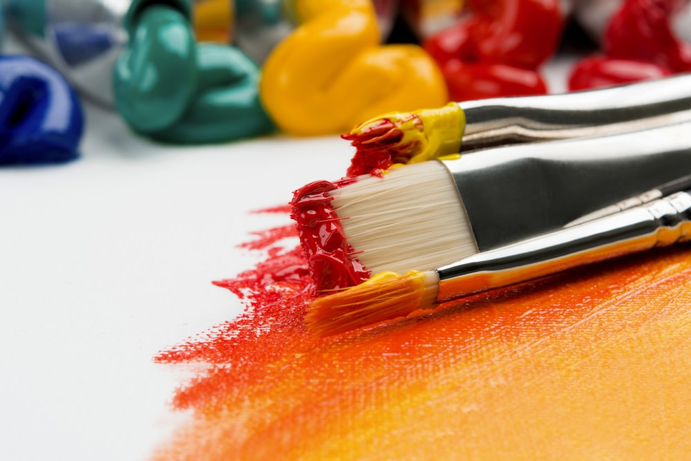
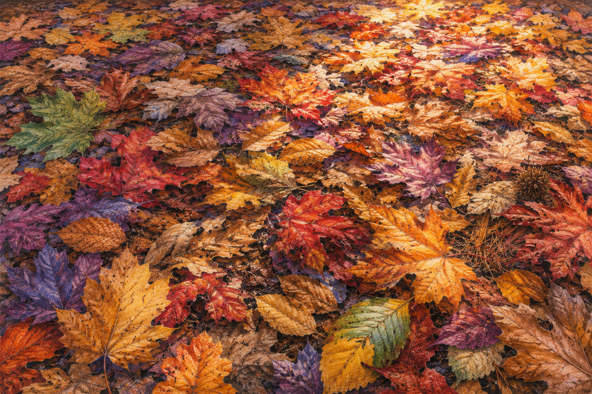
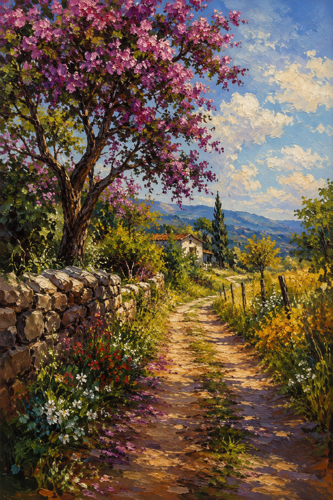

Uma viagem pela especialidade de Desenho e Pintura — onde o lápis encontra o pincel, e cada curva ganha vida sobre o papel. Da carroceria de um clássico ao pôr do sol no quintal: tudo cabe numa boa composição.

Antes de qualquer pincelada, vem a observação. Desenhar um animal é treinar o olhar para proporções, volumes e o ritmo do movimento. Comece com formas básicas — círculos, ovais, triângulos — e só depois acrescente os detalhes: pelos, penas, escamas, brilhos no olhar.
Para a distribuição equilibrada das cores, lembre-se de uma regra simples: nenhuma cor deve "gritar" sozinha. Distribua tons quentes e frios pela composição, repita cores em pontos distantes do desenho e use uma cor de destaque com moderação. O resultado é um trabalho que respira.
Comece claro. É mais fácil escurecer do que clarear no papel.
60% cor dominante, 30% secundária, 10% de destaque.
Afaste o desenho de tempos em tempos para conferir o equilíbrio.
Defina de onde vem a luz antes de colorir qualquer pelo.

Pense num tambor de tinta ao lado de uma caixa de ferramentas. Esse exercício clássico ensina três coisas ao mesmo tempo: perspectiva, proporção e luz e sombra.
Defina uma linha do horizonte e um ponto de fuga. As arestas do retângulo correm em direção a esse ponto. O cilindro ganha elipses — mais abertas quanto mais distantes da altura dos olhos. Em seguida, escolha de onde vem a luz: sombra própria no objeto, sombra projetada no chão, e um pequeno reflexo de luz onde os dois corpos se encontram. É essa conversa entre os volumes que faz o desenho parecer real.

Não precisa ser uma cordilheira distante. Uma árvore na esquina, o telhado do vizinho recortando o céu, o terreno baldio com mato alto ao fim da tarde — tudo isso é paisagem.
Saia com o caderno, escolha um ponto de vista e simplifique: divida a cena em três planos (frente, meio e fundo) e em três valores (claro, médio, escuro). Esse é o segredo de toda boa paisagem: ela funciona primeiro como manchas, depois como detalhe.
Dica de ouro: a primeira hora da manhã e a última da tarde — a chamada "hora dourada" — entregam as melhores sombras e as cores mais ricas.

Todo desenho decorativo começa com uma pergunta simples: para onde vai? Um adesivo de capacete pede formas fortes e poucas cores. Um cartaz para a unidade pede tipografia e uma boa hierarquia. Um painel para o quarto pede paleta harmônica e bastante respiro.
Escolha a técnica (lápis de cor, marcador, guache, recorte), defina o motivo (geométrico, floral, automotivo, lettering) e mantenha uma paleta limitada — três a cinco cores costumam ser o ponto certo.
"Forma segue função — até quando a função é só ser bonito."
· Logotipo do clube em estilo retrô
· Padronagem geométrica para uma capa de caderno
· Pintura de um quadro decorativo com o tema "estrada"
· Adesivo personalizado para a caixa de ferramentas
· Cartaz da próxima programação do clube

Olhe para baixo. O outono pinta o chão de marrons, ocres, vermelhos e dourados — e cada folha é uma pincelada que a natureza já preparou. Esse exercício é uma festa de cor: quanto mais variedade de tons, melhor.

Comece pelas folhas do fundo (mais apagadas) e avance para as da frente (mais nítidas).
Misture folhas grandes, médias e pequenas para dar ritmo visual.
Cada folha pode ter sua mistura única — ninguém pinta exatamente igual ao vizinho.
Truque clássico: jogue sal grosso na tinta úmida para criar texturas inesperadas.

Os franceses chamavam de plein air — pintar ao ar livre, com o vento mexendo no cavalete e a luz mudando a cada quinze minutos. É uma das experiências mais transformadoras para quem desenha.
Leve: caderno de papel próprio para aquarela (mín. 200g/m²), uma caixa pequena, dois pincéis (um redondo médio e um chato pequeno), um pote de água e um pano. Pinte do claro para o escuro e deixe o branco do papel respirar.
Leve: tela pequena, caixa de tubos com poucas cores, pincéis chatos, espátula, solvente em frasco hermético e um pano. Pinte do escuro para o claro e construa empastes nas áreas iluminadas. O óleo perdoa: você pode raspar e refazer.
Toda obra precisa de um momento. Reúna o que produziu durante a especialidade e organize uma exposição no Clube, na Escola ou na Igreja. Convide os pais, os apoiadores e a comunidade — e ofereça algum dos desenhos como presente. Arte que não é compartilhada fica pela metade.
Escolha 8 a 12 trabalhos que mostrem variedade de técnicas. Agrupe por tema ou por requisito da especialidade.
Use molduras simples ou passe-partout de papel kraft. Mantenha todas as obras na mesma altura — a linha do meio do quadro à altura dos olhos.
Cada peça com uma pequena ficha: título, técnica, data e o nome do(a) artista. Capricho nos detalhes faz a exposição parecer profissional.
Faça um convite ilustrado à mão — já é parte da exposição. Distribua pelo menos uma semana antes.
Tenha alguém para receber os visitantes e contar a história por trás de cada obra. Um café simples cria atmosfera.
Separe alguns trabalhos para dar de lembrança aos pais e apoiadores. Assine atrás. É um gesto que ninguém esquece.
O movimento kustom kulture dos anos 50, com seus pinstripes e chamas pintadas à mão, transformou carrocerias em obras de arte. Ed "Big Daddy" Roth foi um dos pioneiros.
Cores opostas na roda (complementares) criam contraste vibrante. Cores vizinhas (análogas) trazem harmonia. As duas regras resolvem 90% das dúvidas de paleta.
2H é duro e claro, ótimo para esboço. HB é o meio-termo. 6B é macio e muito escuro, perfeito para sombras profundas. Tenha pelo menos um de cada.
Cada camada precisa secar antes da próxima — ou as cores viram lama. Tenha paciência (ou um secador de cabelo).
"Gordo sobre magro": camadas com mais óleo vão por cima das com menos óleo. Inverter racha a tinta com o tempo.
Quem desenha 15 minutos por dia melhora mais que quem desenha 3 horas no fim de semana. Constância vence intensidade.
Borrão, traço torto, cor errada: muitas das melhores obras nasceram de "acidentes" que o artista soube aproveitar.